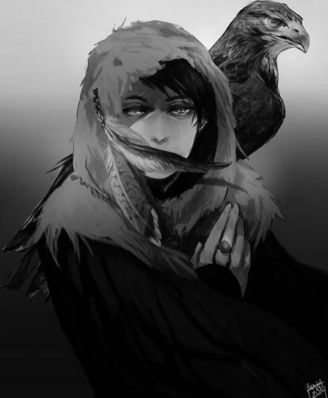

Статус: Скиталец, бывший сосуд древнеэльфийского бога Уртемиэля
Вселенная: Dragon Age
Способности: Оборотничество (умение обращаться в ворона), магия природы
«Магия — это нечто, что является такой же управляемой неотъемлемой частью природы, как ветер, способный как погасить огонь, так и распалить тот до масштабов неукротимого пламени, безжалостно обращающего в пепел всё на своём пути»
Сын знаменитого Серого Стража, вошедшего в историю защитником Ферельдена и ведьмы из диких земель Коркари по имени Морриган, в будущем ставшей советницей королевы Орлея и незаменимым союзником Инквизиции. Будучи зачатым во время особого ритуала, на какое-то время стал вместилищем для Утемриеля с целью спасти Серого Стража от неименуемой гибели при сражении с Архидемоном. Годы спустя, не без помощи Флемет, был освобожден от гласа Бога Красоты в своей плоти, сохранив при этом все его воспоминания о мире задолго до того, как пала Империя Тевинтер и Тедас оброс государствами Ферельдена, Орлея, Антивы в том виде, в котором те есть сейчас.
Годы шли, и вскоре юный сын ведьмы волей невиданных сил попал сквозь Иллувиан во Временной Излом за пределы привычного мира, где течение времени не поддавалось привычным законам природы и разливалось будто по искревленной полосе.
ДОСЬЕ ПЕРСОНАЖА Киран (Dragon Age)
